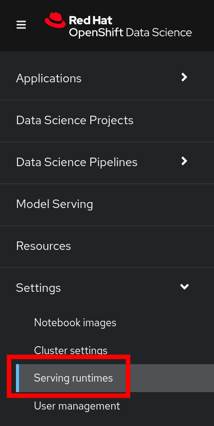
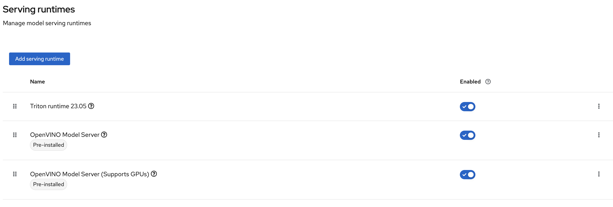
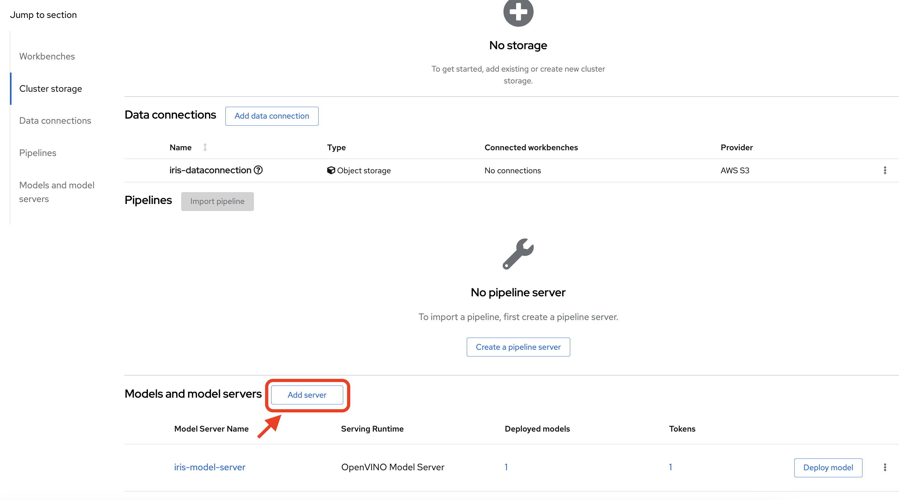
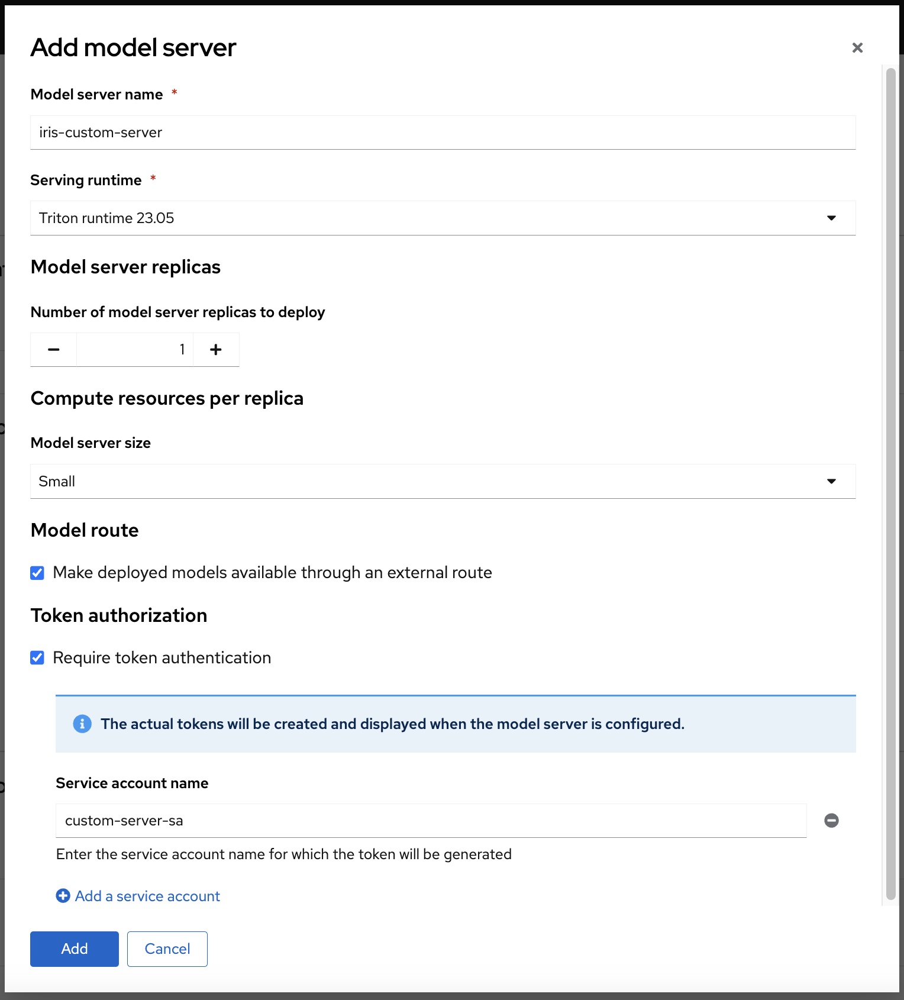
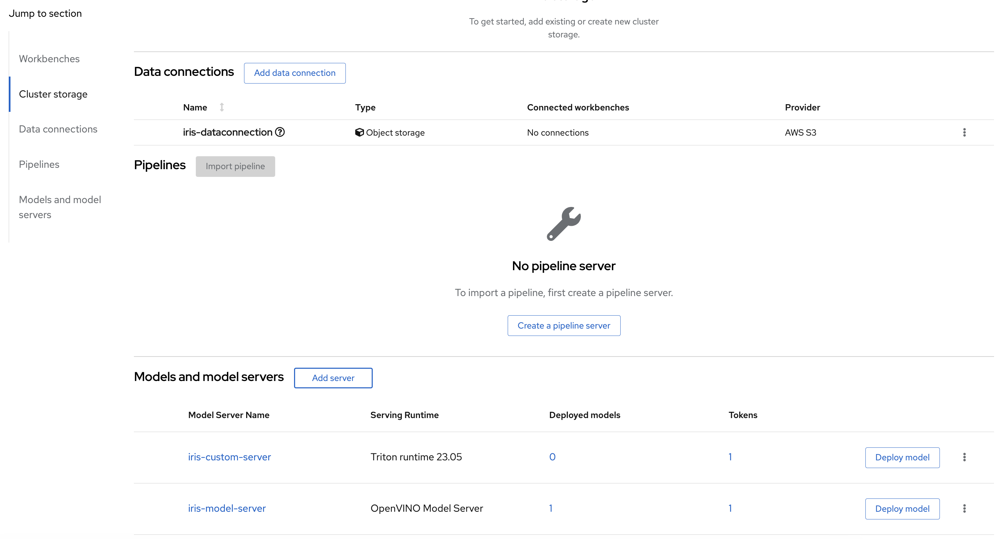
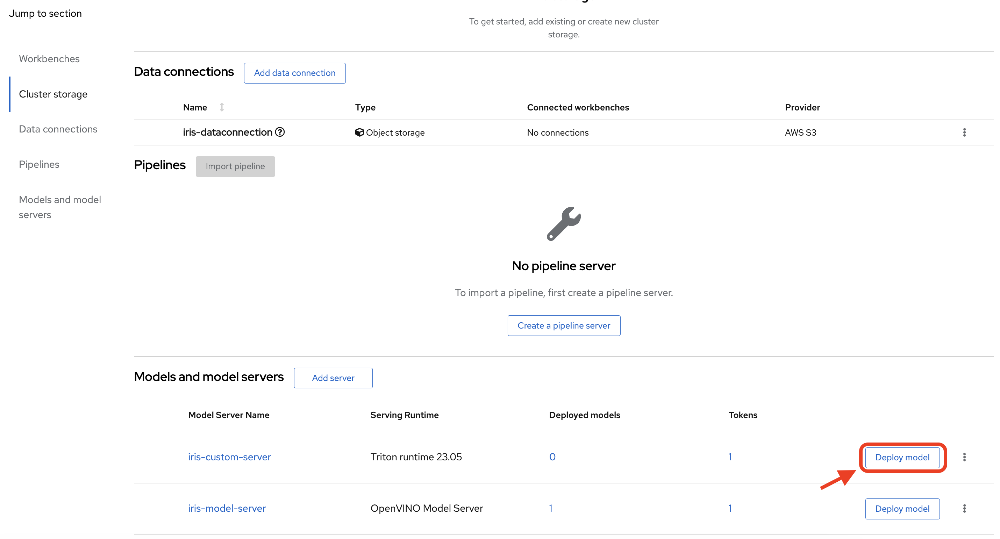
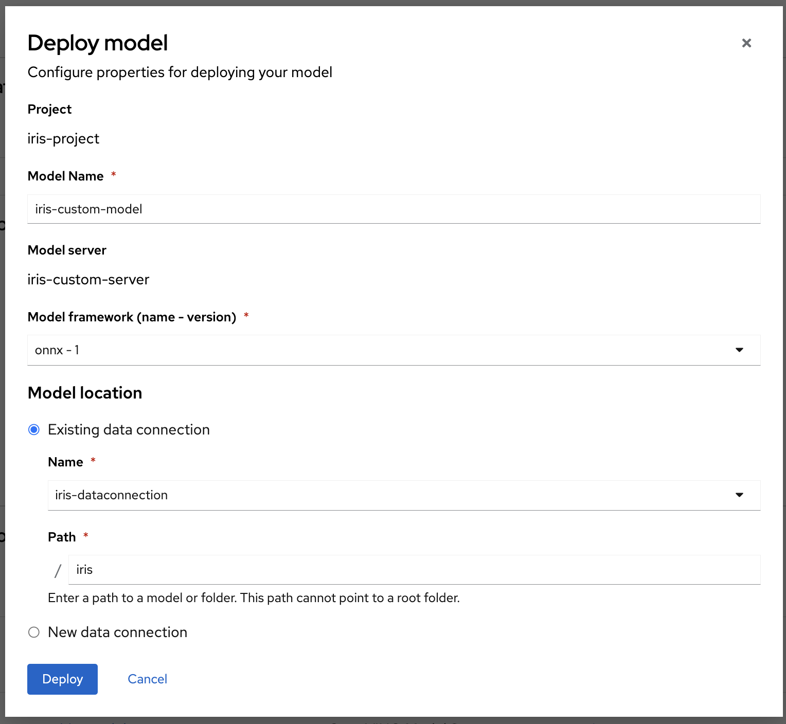
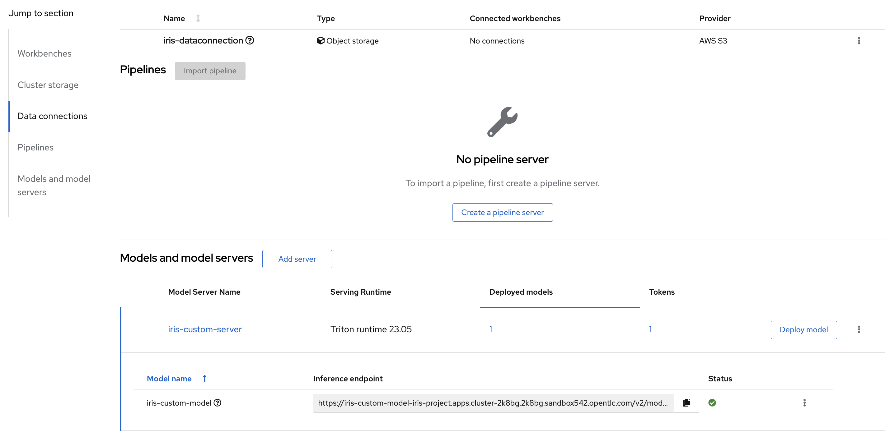

Creating a Custom Model Serving Runtime
A model-serving runtime provides integration with a specified model server and the model frameworks that it supports. By default, Red Hat OpenShift AI includes the OpenVINO Model Server runtime. However, if this runtime doesn’t meet your needs (it doesn’t support a particular model framework, for example), you might want to add your own, custom runtimes.
As an administrator, you can use the OpenShift AI interface to add and enable custom model-serving runtimes. You can then choose from your enabled runtimes when you create a new model server.
Prerequisite
In order to run this exercise, be sure to have handy the model we created in the previous section, that is:
-
An s3 bucket with a model in format onnx
-
A Data Science project with the name iris-project
-
A data connection to S3 with the name iris-data-connection
This exercise will guide you through the broad steps necessary to deploy a custom Serving Runtime in order to serve a model using the Triton Runtime (NVIDIA Triton Inference Server).
|
While RHOAI supports the ability to add your own runtime, it does not support the runtimes themselves. Therefore, it is up to you to configure, adjust and maintain your custom runtimes. |
Adding The Custom Runtime
-
Log in to RHOAI with a user who is part of the RHOAI admin group
-
Navigate to the Settings menu, then Serving Runtimes
 -
Click on the Add Serving Runtime button:

-
Click on Start from scratch and in the window that opens up, paste the following YAML:
apiVersion: serving.kserve.io/v1alpha1 kind: ServingRuntime metadata: name: triton-23.05-20230804 labels: name: triton-23.05-20230804 annotations: maxLoadingConcurrency: "2" openshift.io/display-name: "Triton runtime 23.05" spec: supportedModelFormats: - name: keras version: "2" autoSelect: true - name: onnx version: "1" autoSelect: true - name: pytorch version: "1" autoSelect: true - name: tensorflow version: "1" autoSelect: true - name: tensorflow version: "2" autoSelect: true - name: tensorrt version: "7" autoSelect: true protocolVersions: - grpc-v2 multiModel: true grpcEndpoint: "port:8085" grpcDataEndpoint: "port:8001" volumes: - name: shm emptyDir: medium: Memory sizeLimit: 2Gi containers: - name: triton image: nvcr.io/nvidia/tritonserver:23.05-py3 command: [/bin/sh] args: - -c - 'mkdir -p /models/_triton_models; chmod 777 /models/_triton_models; exec tritonserver "--model-repository=/models/_triton_models" "--model-control-mode=explicit" "--strict-model-config=false" "--strict-readiness=false" "--allow-http=true" "--allow-sagemaker=false" ' volumeMounts: - name: shm mountPath: /dev/shm resources: requests: cpu: 500m memory: 1Gi limits: cpu: "5" memory: 1Gi livenessProbe: # the server is listening only on 127.0.0.1, so an httpGet probe sent # from the kublet running on the node cannot connect to the server # (not even with the Host header or host field) # exec a curl call to have the request originate from localhost in the # container exec: command: - curl - --fail - --silent - --show-error - --max-time - "9" - http://localhost:8000/v2/health/live initialDelaySeconds: 5 periodSeconds: 30 timeoutSeconds: 10 builtInAdapter: serverType: triton runtimeManagementPort: 8001 memBufferBytes: 134217728 modelLoadingTimeoutMillis: 90000 -
After clicking the Add button at the bottom of the input area, we are able to see the new Runtime in the list. We can re-order the list as needed (the order chosen here is the order in which the users will see these choices)

Creating The Model Server
-
Using the iris-project created in the previous section, scroll to the Models and model servers section, and select the Add server button
 -
Fill up the form as in the following example, notice how Triton runtime 23.05 is one of the available options for the Serving runtime dropdown.

-
After clicking the Add button at the bottom of the form, we are able to see our iris-custom-server model server, created with the Triton runtime 23.05 serving runtime.

Deploy The Model
-
Use the Deploy Model button at the right of the row with the iris-custom-server model server
 -
Fill up the Deploy Model form as in the following example:
Notice the model name, in this exercise we are naming it iris-custom-model, we can’t use the iris-model name anymore. You can be creative and name it differently, just mind your selection when running the inference service with the APIs.
-
After clicking the Deploy button at the bottom of the form, we see the model added to our Model Server row, wait for the green checkmark to appear.

Test The Model With CURL
Now that the model is ready to use, we can make an inference using the REST API
-
Assign the route to an environment variable in your local machine, so that we can use it in our curl commands
export IRIS_ROUTE=https://$(oc get routes -n iris-project | grep iris-custom-model | awk '{print $2}') -
Assign an authentication token to an environment variable in your local machine
export TOKEN=$(oc whoami -t) -
Request an inference with the REST API
curl -H "Authorization: Bearer $TOKEN" $IRIS_ROUTE/v2/models/iris-custom-model/infer -X POST --data '{"inputs" : [{"name" : "X","shape" : [ 1, 4 ],"datatype" : "FP32","data" : [ 3, 4, 3, 2 ]}]}' -
The result received from the inference service looks like the following:
{"model_name":"iris-custom-model__isvc-9cc7f4ebab","model_version":"1","outputs":[{"name":"label","datatype":"INT64","shape":[1,1],"data":[1]},{"name":"scores","datatype":"FP32","shape":[1,3],"data":[4.851966,3.1275778,3.4580243]}]}